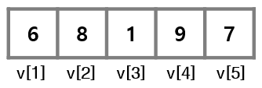

Chapter 3 데이터와 자료구조
3.1 데이터 이해
3.2 벡터(vector)
3.2.1 벡터 이해
- 데이터 구조의 가장 기본적인 형태로, 1차원 형태의 데이터를 저장할 수 있는 저장소
- 변수는 하나의 값을 저장하나, 벡터는 성격이 같은 여러 개의 값도 저장할 수 있음
c()함수를 이용하여 벡터를 생성- 하나의 벡터에는 동일한 종류의 자료형이 저장되어야 함
- 문자와 숫자를 함께 사용하여 벡터에 저장하면, 숫자는 모두 문자로 바뀜
v1 <- c(1, 2, 3, 4, 5) # 숫자형 벡터
v2 <- c("a,", "b", "c") # 문자형 벡터
v3 <- c(TRUE, FALSE, FALSE) # 논리형 벡터
v4 <- c(1, 2, 3, "a", "b,", "c") # 문자형 벡터- 연속적인 숫자로 이루어진 벡터 생성 -
: - 일정한 간격의 숫자로 이루어진 벡터 생성 -
seq(시작값, 종료값, 간격) - 반복된 숫자로 이루어진 벡터 생성 -
rep(반복대상값, 반복횟수)함수
3.2.2 인덱스(index)
- 벡터에 저장된 각각의 값들을 구별하기 위하여 앞쪽의 값부터 시작하여 부여한 순서값
- 인덱스를 통해 벡터의 특정 위치에 저장된 값들을 하나 또는 여러 개 추출할 수 있음
- 인덱스는
[ ]를 이용하여 나타냄

3.2.4 벡터 산술연산
- 벡터에 대한 산술연산은 벡터 안에 포함된 모든 값들에 대한 연산으로 바뀌어 실행됨
- 벡터와 벡터 간의 연산은 대응되는 위치에 있는 값끼리의 연산으로 바뀌어 실행됨
- 벡터에 적용 가능한 함수
| 함수 | 설명 |
|---|---|
| sum() | 벡터에 포함된 값들의 합 |
| mean() | 벡터에 포함된 값들의 평균 |
| median() | 벡터에 포함된 값들의 중앙값 |
| max() | 벡터에 포함된 값들의 최대값 |
| min() | 벡터에 포함된 값들의 최소값 |
| var() | 벡터에 포함된 값들의 분산 |
| sd() | 벡터에 포함된 값들의 표준편차 |
| length() | 벡터에 포함된 값들의 개수(길이) |
3.2.5 논리연산자
- 연산의 결과가 TRUE 또는 FALSE로 출력되는 것
- 논리연산자를 벡터에 적용하여 조건에 맞는 값들을 추출 가능
| 함수 | 예 | 설명 |
|---|---|---|
| < | A < B | A보다 B가 크면 TRUE |
| > | A > B | A보다 B가 작으면 TRUE |
| <= | A <= B | A보다 B가 크거나 같으면 TRUE |
| >= | A >= B | A보다 B가 작거나 같으면 TRUE |
| == | A == B | A와 B가 같으면 TRUE |
| != | A != B | A와 B가 같지 않으면 TRUE |
| & | A & B | A와 B 모두가 TRUE이면 TRUE |
| |
A|B |
A와 B 둘 중 하나라도 TRUE이면 TRUE |
- 논리연산도 벡터에 포함된 각각의 값에 대한 연산으로 바뀌어 실행됨
- 논리값이 산술연산에 사용되면 FALSE는 0으로, TRUE는 1로 간주됨
3.2.6 리스트(list)
- 서로 다른 자료형의 값들을 1차원 배열에 저장하고 다룰 수 있도록 함
list()함수를 이용하여 리스트를 생성- 리스트에 저장된 값은
[[ ]]를 사용하거나, ’리스트이름$값의이름’의 형태로 추출할 수 있음
3.2.7 팩터(factor)
- 문자형 데이터가 저장된 벡터의 한 종류
- 성별, 혈액형 등과 같이 저장할 문자값들이 몇 종류로 정해져 있을 때 팩터를 사용함
- 문자형 벡터를 만든 뒤
factor()함수를 이용하여 팩터를 생성 levels()함수는 팩터에 저장된 값들의 종류를 알려줌- 팩터는 사전에 정의된 값 외에 다른 값들은 입력하지 못하도록 함
season <- c("spring", "fall", "winter", "summer", "summer", "spring")
season.new <- factor(season)
levels(season.new)
season.new2 <- factor(season, levels = c("spring", "summer", "fall", "winter"))
levels(season.new2)3.3 행렬(matrix)과 데이터프레임(data frame)
- 1차원 데이터 : 단일 주제의 데이터 → 벡터
- 2차원 데이터 : 여러 주제의 데이터 → 매트릭스, 데이터프레임
3.3.1 행렬 이해
- 2차원 테이블 형태의 자료구조
- 모든 셀에 저장되는 값은 동일한 자료형이어야 함
matrix()함수를 이용하여 행렬을 생성- 매개변수 nrow, ncol - 행렬의 행과 열의 개수를 지정
- 매개변수 byrow - TRUE인 경우 행렬에 저장될 값들을 행 방향으로 채움, 기본값(default)은 FALSE
## [,1] [,2] [,3] [,4] [,5]
## [1,] 1 5 9 13 17
## [2,] 2 6 10 14 18
## [3,] 3 7 11 15 19
## [4,] 4 8 12 16 20- 행과 열의 위치에 대한 2개의 인덱스값으로 특정 위치의 값을 추출할 수 있음
rbind(),cbind()함수를 이용하여 벡터 또는 행렬을 결합
m2 <- matrix(1:12, nrow = 4, ncol = 3, byrow = TRUE) # 4x3 행렬
m3 <- matrix(13:18, nrow = 2, ncol = 3) # 2x3 행렬
m4 <- rbind(m2, m3) # 6x3 행렬
v <- c(1:6) # 원소가 6개인 벡터
cbind(m4, v) # 6x4 행렬rownames(),colnames()함수를 이용하여 행과 열에 각각 이름을 지정- 데이터를 이해하는데 도움이 됨
score <- matrix(c(80, 67, 74,
82, 95, 88,
75, 84, 82),
nrow = 3, ncol = 3, byrow = TRUE)
rownames(score) <- c("Kim", "Lee", "Park")
colnames(score) <- c("Kor", "Eng", "Math")
score## Kor Eng Math
## Kim 80 67 74
## Lee 82 95 88
## Park 75 84 823.3.2 데이터프레임 이해
- 서로 다른 형태의 데이터를 2차원 데이터 형태로 묶을 수 있는 자료구조
- 외관상으로는 행렬과 차이가 없지만 행렬에 저장되는 모든 값들은 동일한 자료형인 반면, 데이터프레임은 서로 다른 자료형의 값을 함께 저장할 수 있음
- 데이터프레임은 특정 열을 잘라서 보았을 때는 값들의 자료형이 동일해야 함
data.frame()함수를 이용하여 데이터프레임 생성- 일반적으로 여러 개의 벡터를 결합하는 형태
- 데이터프레임은 행렬과 동일한 방법으로 특정 위치의 값을 추출하거나, 행과 열의 이름을 지정할 수 있음
df1 <- data.frame(name = c("Kim", "Lee", "Park", "Choi"),
age = c(24, 25, 22, 27),
btype = factor(c("A", "B", "O", "B")),
religion = c(TRUE, FALSE, TRUE, TRUE))
df1## name age btype religion
## 1 Kim 24 A TRUE
## 2 Lee 25 B FALSE
## 3 Park 22 O TRUE
## 4 Choi 27 B TRUE3.3.3 행렬과 데이터프레임 다루기
3.3.3.1 기본 정보 확인
- 행렬과 데이터프레임은 모두 2차원 형태의 데이터를 저장하는 자료구조이기 때문에 다루는 방법이 대부분 동일함
3.3.3.2 원소값 추출
subset()함수 이용하여 조건에 맞는 행과 열의 값 추출할 수 있음- 매개변수 subset - 행에 대한 조건을 지정
- 매개변수 select - 추출하고자 하는 열을 지정
3.3.3.3 행렬 및 데이터프레임 산술연산
- 벡터와 같이 숫자로 구성된 행렬이나 데이터프레임도 각 원소에 대한 연산으로 바뀌어 실행됨
- 행렬과 행렬 간의 연산은 동일한 위치에 있는 값끼리의 연산으로 바뀌어 실행되므로, 두 행렬의 크기(행과 열의 개수)가 같아야 함
m1 <- matrix(1:20, nrow = 4, ncol = 5) # 4x5 행렬
m2 <- matrix(21:40, nrow = 4, ncol = 5) # 4x5 행렬
2 + m1
3 * m2
m1 + m2
m1 - m2
m1 * m2
m1 / m2colSums(),colMeans(),rowSums(),rowMeans()함수 이용하여 행별, 열별 합계 및 평균을 계산할 수 있음
colSums(iris[, -5]) # 열별 합계
colMeans(iris[, -5]) # 열별 평균
rowSums(iris[, -5]) # 행별 합계
rowMeans(iris[, -5]) # 행별 평균3.4 외부 파일 읽기 및 쓰기
3.4.2 외부 파일 읽기
read.csv()함수를 이용하여 외부에 있는 csv 파일을 불러옴- 예제 - StudentSurvey.csv